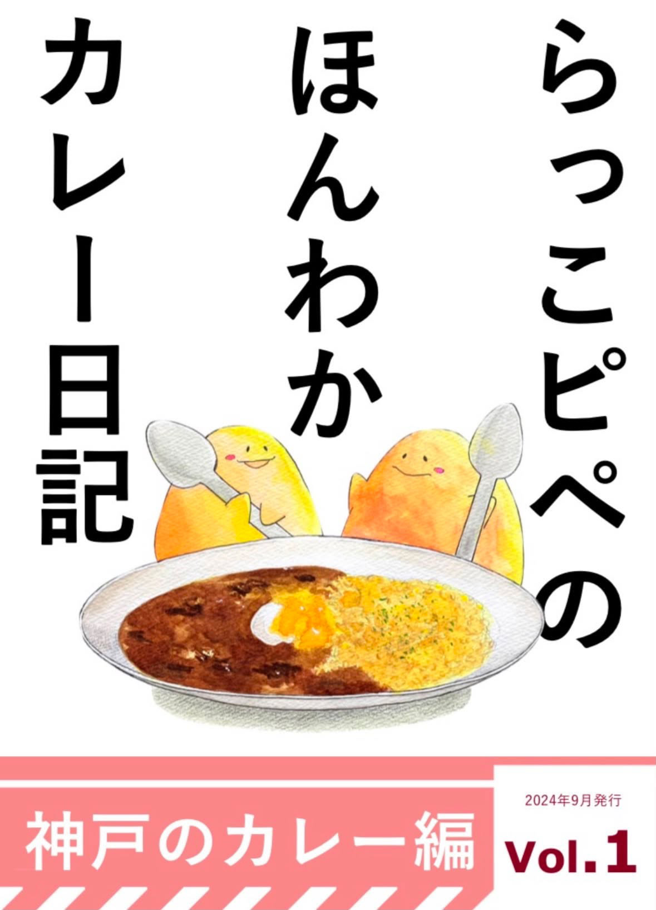

BOOK DETAILS
らっこピペのほんわかカレー日記 神戸のカレー編 Vol.1

らっこピペのほんわかカレー日記 神戸のカレー編 Vol.1
神戸のカレー屋さん4店舗のカレーを各2種レポし、それぞれを擬キャラ化してみました。
食レポ本というものはほんとうに数多くあるなかで、自分なりに差別化するために、レポ後にその食べたカレーさんをゆる～～いキャラクターにすることに挑戦しました。
ぜひお手に取っていただけますと幸いです。('ω')
- 刊行日
- 2024年9月
